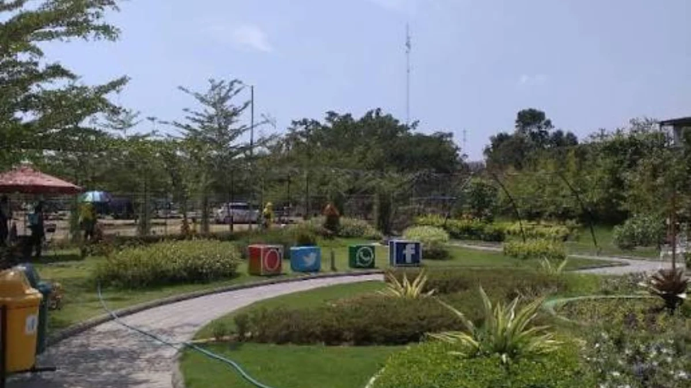

Wisata edukasi anak di Kediri tersedia di taman alam, kolam belajar renang, dan taman rekreasi keluarga yang menggabungkan bermain dengan pengalaman belajar langsung.
- Kediri Eco Park, Taman Wisata Tirtoyoso, dan Wisata Dunia Candy sering dirujuk sebagai tujuan keluarga.
- Tiket Kediri Eco Park tercatat Rp10.000 sampai Rp15.000 dan Tirtoyoso Rp15.000 sampai Rp18.000.
- Wisata Dunia Candy buka lebih lama pada akhir pekan, hingga pukul 20.00 WIB.
- Pengawasan orang tua tetap wajib, terutama di area kolam dan wahana air.
- Satu hari sebaiknya berisi dua lokasi agar anak tidak kelelahan.
DAFTAR ISI
- 1. Apa Saja Tempat Wisata Edukasi Anak di Kediri?
- 2. Berapa Kisaran Tiket Wisata Anak di Kediri?
- 3. Usia Berapa Anak Cocok Mengunjungi Wisata Edukasi di Kediri?
- 4. Bagaimana Membuat Kunjungan Anak Menjadi Kegiatan Belajar?
- 5. Apa Saja Perlengkapan yang Perlu Dibawa Saat Wisata Edukasi Bersama Anak?
- 6. Bagaimana Menjaga Keselamatan Anak Saat Berwisata?
- 7. Bagaimana Contoh Rencana Setengah Hari untuk Keluarga di Kediri?
- 8. Kesimpulan
- 9. FAQ
Apa Saja Tempat Wisata Edukasi Anak di Kediri?
Tempat yang sering dipilih keluarga adalah Kediri Eco Park, Taman Wisata Tirtoyoso, Wisata Dunia Candy, dan Gumul Paradise Island, ditambah kunjungan ke Hutan Joyoboyo.
Kediri Eco Park berada di Jalan Kelapa, Ketami, Kecamatan Pesantren, Kota Kediri, dan buka pukul 08.00 sampai 17.00 WIB.
Taman Wisata Tirtoyoso beralamat di Jalan Jenderal A. Yani Nomor 123 dan memiliki empat kolam dengan kedalaman berbeda serta area belajar renang.
Wisata Dunia Candy berada di Jalan Raya Wonorejo Nomor 444, Wates, sekitar 14 kilometer dari pusat kota.
Gumul Paradise Island berada di kompleks Simpang Lima Gumul. Menurut rumah123, lokasi ini buka Selasa sampai Jumat pukul 09.00 sampai 17.00 WIB.
Beritajatim menyebut Wisata Dunia Candy ramah anak dan memadukan wahana, edukasi, belanja, serta kuliner. Seluruh destinasi ramah keluarga ini melengkapi ulasan di artikel utama tentang panduan lengkap wisata edukasi di daerah Kediri.
Berapa Kisaran Tiket Wisata Anak di Kediri?
Kisaran tiket wisata anak di Kediri sekitar Rp10.000 sampai Rp18.000 per orang untuk taman populer, berdasarkan panduan rumah123 yang dirujuk November 2026.
Kediri Eco Park tercatat Rp10.000 sampai Rp15.000 untuk umum. Taman Wisata Tirtoyoso tercatat Rp15.000 sampai Rp18.000 untuk anak dan dewasa. Tiket di akhir pekan atau hari libur bisa berbeda, sehingga angka ini hanya sebagai gambaran awal.
Tambahkan anggaran untuk parkir, makan, dan jajanan. Untuk keluarga berempat, siapkan dana cadangan karena wahana tertentu biasanya memiliki tarif tersendiri di dalam lokasi.
Usia Berapa Anak Cocok Mengunjungi Wisata Edukasi di Kediri?
Anak prasekolah cocok dengan taman bermain dan kolam dangkal, sedangkan anak sekolah dasar lebih siap memahami penjelasan di museum, kampung industri, dan desa wisata.
Untuk balita, pilih lokasi dengan area bermain aman, teduh, dan toilet dekat. Durasi kunjungan sebaiknya singkat.
Untuk anak usia sekolah dasar, pilih tempat yang menawarkan kegiatan langsung, seperti melihat pembuatan tahu di Kampung Tahu Tinalan atau menyimak koleksi arca di wisata sejarah di Kediri dari museum hingga candi.
Remaja biasanya lebih menikmati kegiatan yang menantang, seperti membuat dokumentasi, wawancara singkat dengan pemandu, atau tugas observasi. Sesuaikan pilihan dengan minat anak agar kunjungan terasa menyenangkan, bukan paksaan.
Bagaimana Membuat Kunjungan Anak Menjadi Kegiatan Belajar?
Kunjungan menjadi kegiatan belajar bila anak diberi tujuan sederhana, misalnya menemukan tiga hal baru, mencatatnya, lalu menceritakan kembali sepulang dari lokasi.
Beberapa ide yang mudah diterapkan:
- Buat kartu tantangan berisi tiga pertanyaan tentang tanaman, hewan, atau benda yang akan dilihat.
- Minta anak memotret atau menggambar satu objek, lalu menulis satu kalimat penjelasan.
- Ajak anak bertanya langsung kepada pemandu atau petugas.
- Di area kolam belajar renang, fokuskan pada pengenalan air dan keselamatan, bukan perlombaan.
- Sepulang, buat jurnal kecil atau cerita bergambar berjudul hari menarik di Kediri.
Hutan Joyoboyo di Kota Kediri, menurut laporan Suara Surabaya tahun 2019, dirancang pemerintah kota sebagai paru-paru kota sekaligus tempat edukasi bagi pelajar. Karena laporan tersebut sudah lama, periksa kondisi dan aturan terbaru sebelum berkunjung.

Taman Wisata Tirtoyoso memiliki fasilitas kolam belajar renang yang cocok untuk sarana rekreasi dan edukasi air anak.Apa Saja Perlengkapan yang Perlu Dibawa Saat Wisata Edukasi Bersama Anak?
Perlengkapan utama saat wisata edukasi bersama anak adalah air minum, pakaian ganti, topi, buku catatan kecil, uang tunai, dan kantong sampah.
Pakaian ganti penting bila lokasi memiliki kolam atau area basah. Buku catatan dan pensil warna membantu anak mencatat atau menggambar temuan.
Uang tunai berguna karena sebagian pengelola lokasi kecil, petugas parkir, dan penjual jajanan lokal belum menerima pembayaran digital.
Bawa bekal ringan untuk anak yang mudah lapar, namun patuhi aturan pengelola tentang makanan dari luar. Terakhir, siapkan kantong sampah agar lokasi tetap bersih dan anak belajar bertanggung jawab pada lingkungan.
Bagaimana Menjaga Keselamatan Anak Saat Berwisata?
Keselamatan anak dijaga dengan pengawasan penuh orang dewasa, pakaian dan alas kaki, membawa air minum, serta mengikuti aturan petugas di area kolam dan wahana.
Area kolam memerlukan perhatian khusus. Pastikan anak selalu dalam jangkauan pandang orang dewasa, tidak berlari di tepi kolam, dan menggunakan alat bantu apung bila diperlukan. Jangan memaksa anak masuk ke kedalaman yang belum sesuai kemampuannya.
Di taman alam, gunakan sunblock, topi, dan alas kaki tertutup. Bawa obat pribadi yang biasa dipakai anak serta kontak darurat.
Tentukan titik kumpul sebelum berpencar di lokasi yang luas. Bila kondisi cuaca buruk, tunda atau ganti ke lokasi dalam ruangan seperti museum.
Bagaimana Contoh Rencana Setengah Hari untuk Keluarga di Kediri?
Rencana setengah hari yang nyaman memilih satu tempat belajar pada pagi hari, istirahat makan siang, lalu satu taman bermain ringan pada sore hari.
Contohnya, mulai pukul 09.00 di Kampung Tahu Tinalan untuk melihat proses pembuatan tahu, makan siang di sekitar Kota Kediri, kemudian lanjut ke Kediri Eco Park yang buka sampai pukul 17.00 WIB. Hindari menyusun jadwal terlalu padat karena anak butuh waktu istirahat.
Pada hari libur, datang lebih pagi untuk menghindari antrean dan cuaca panas, dan siapkan rencana cadangan jika lokasi penuh.
Kesimpulan
Wisata edukasi anak di Kediri dapat dinikmati lewat taman alam, kolam belajar renang, dan taman keluarga dengan biaya yang umumnya terjangkau.
Pilih lokasi sesuai usia anak, beri tujuan belajar sederhana, dan utamakan keselamatan. Batasi kunjungan menjadi dua lokasi per hari dan konfirmasi jam buka sebelum berangkat.